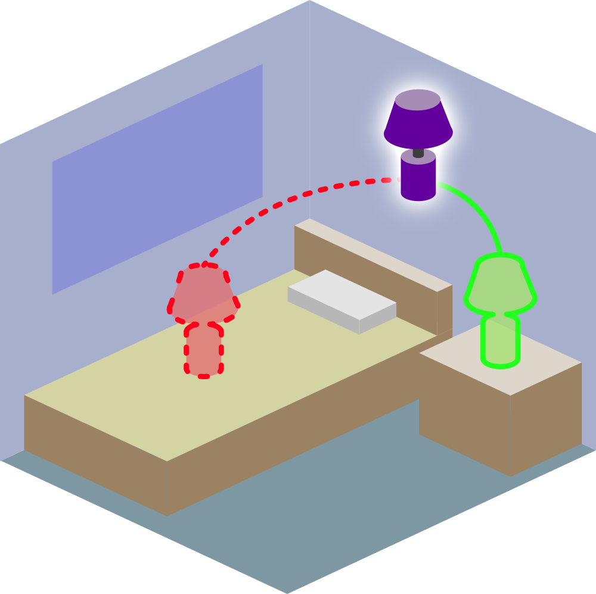

 Seeing the Unseen: Visual Common Sense for Semantic Placement
Semantic Placement. Consider asking an agent to place cushions in a living room. In (a), the couch on the right is already full with cushions, and a natural human preference would be to place the cushion against the backrest of the armchair. In (b), a natural placement preference would be center of the couch. We propose the problem of Semantic Placement (SP) -- given an image and a name of an object, a vision system must predict a semantic mask indicating a valid placement for the object in the image. (c) Our SP predictions enable a Stretch robot from Hello Robot to perform Embodied Semantic Placement (ESP) task within a photorealistic simulated environment.
Abstract
Computer vision tasks typically involve describing what is visible in an image (e.g. classification, detection, segmentation, and captioning). We study a visual common sense task that requires understanding 'what is not visible'. Specifically, given an image (e.g. of a living room) and a name of an object ("cushion"), a vision system is asked to predict semantically-meaningful regions (masks or bounding boxes) in the image where that object could be placed or is likely be placed by humans (e.g. on the sofa). We call this task: Semantic Placement (SP) and believe that such common-sense visual understanding is critical for assitive robots (tidying a house), AR devices (automatically rendering an object in the user's space), and visually-grounded chatbots with common sense. Studying the invisible is hard. Datasets for image description are typically constructed by curating relevant images (e.g. via image search with object names) and asking humans to annotate the contents of the image; neither of those two steps are straightforward for objects not present in the image. We overcome this challenge by operating in the opposite direction: we start with an image of an object in context (which is easy to find online) and remove that object from the image via inpainting. This automated pipeline converts unstructured web data into a paired with/without object dataset. With this proposed data generation pipeline, we collect a novel dataset, containing ~1.3M images across 9 object categories. We then train a SP prediction model, called CLIP-UNet, on our dataset. The CLIP-UNet outperforms existing VLMs and baselines that combine semantic priors with object detectors, generalizes well to real-world and simulated images, exhibits semantics-aware reasoning for object placement, and enables downstream applications like tidying robots in indoor environments.
Read more in the paper.
Approach

Key idea is to leverage advances in open-vocabulary object detectors, segmentation models, and image inpainting models to automatically generate paired training data at scale using images in the wild.
Fig (b). Automatic data generation pipeline.
Using the generated data we train a CLIP-UNet model to predict semantic placement given an query object and an image.
Fig (c).Architecture diagram of our CLIP-UNet method.
Results
We show evaluation results of our approach CLIP-UNet, Prior + Detector, and VLM baselines. Our method (row 5) is favored the most by a large margin on real world images from LAION, and modestly in simulated images from HSSD, when asked to rank predictions from all 5 baselines from Tab. 1.
Tab 1. Semantic Placement evaluation on real-world and HSSD image dataset. HP denotes Human Preference, TrP denotes Target Precision, RSP denotes Receptacle Surface Precision, and RSR denotes Receptacle Surface Recall.
Semantic Placement

Fig (d). Qualitative examples of semantic placement masks predicted by our method on unseen images from LAION and HSSD dataset.
Embodied Semantic Place
We evaluate our CLIP-UNet model for downstream task of tidying an environment. In this task, an agent is spawned at a random location in an indoor environment and is tasked with placing an instance of a target object category at a semantically meaningful location.

(a.) Place Potted Plant.

(b.) Place Cushion.

(c.) Place Book.

(d.) Place Potted Plant.
Fig (e). Visualization of embodied semantic placement policy behavior.
Paper

@misc{ramrakhya2024seeing,
title={Seeing the Unseen: Visual Common Sense for Semantic Placement},
author={Ram Ramrakhya and Aniruddha Kembhavi and Dhruv Batra and Zsolt Kira and Kuo-Hao Zeng and Luca Weihs},
year={2024},
eprint={2401.07770},
archivePrefix={arXiv},
primaryClass={cs.CV}
}
People


Acknowledgements
We thank the PRIOR team at AI2 for feedback on the project idea. The Georgia Tech effort was supported in part by NSF, ONR YIP, and ARO PECASE. The views and conclusions contained herein are those of the authors and should not be interpreted as necessarily representing the official policies or endorsements, either expressed or implied, of the U.S. Government, or any sponsor.